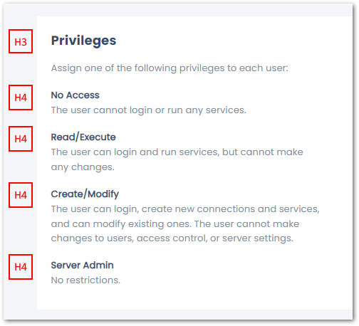
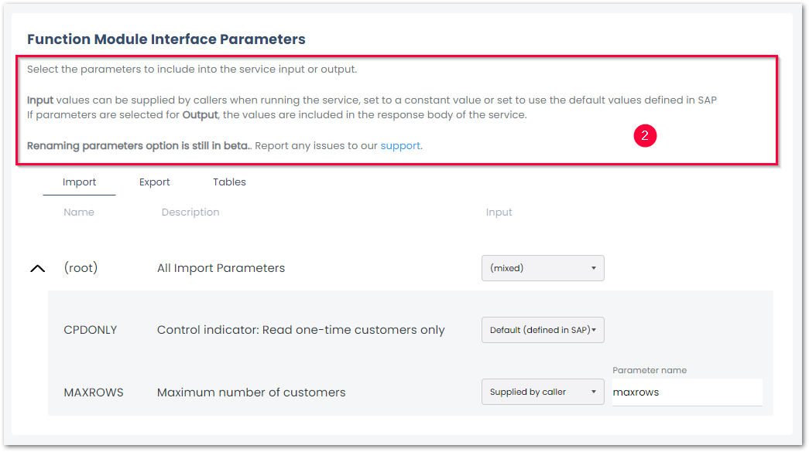
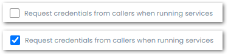

Layout
The layout part of the User Interface Style Guide applies only to yunIO.
Layout refers to the arrangement and organization of visual elements on a screen or page. It involves positioning and sizing various components such as text, images, buttons, and other interactive elements to create a visually appealing and user-friendly interface.
A good layout design considers factors like hierarchy, balance, spacing, and alignment to ensure that the interface is easy to navigate and understand. It helps users to quickly find the information they need and interact with the interface effectively.
Containers
The following rules apply to the menu containers:
- every container includes an H3 headline .
- large tables that need scrolling have a fixed header .
- the last containers on a page level evenly .
- space between container and text (top and left) is
20px, see definition inmain.css.
Headlines
Menu containers use the following headlines:
- H3 for section titles (mandatory for every menu container)
- H4 headlines in descriptions (used for descriptions of dropdown menu options)

H3 color: --dark_blue
H3 text size: 18px
H4 color: --dark_blue
H4 text size: 13px
Definition in index.css:
.h3 {
font-family: poppinsBold;
color: var(--dark_blue);
font-size: 18px;
}
.h4 {
margin-bottom: 0;
color: var(--dark_blue);
}
Descriptions
The following rules apply to descriptions:
- descriptions are displayed on the left side of a container .
Do not add buttons or other input options underneath the descriptions.
- when a container is too small to divide descriptions and input to the left and right side, the descriptions are added at the top of the container .

Color: --text_help_gray
Text size: 13px
Definition in details-grid.css:
.details-grid p {
line-height: 19px;
letter-spacing: 0.01em;
color: var(--table_gray);
}
.details-grid-description {
margin: 0 15px 0 0;
max-width: 380px;
}
Input Fields
The following rules apply to input fields:
- labels are placed above the text field.
- text fields use underscores.
Label color: --text_help_gray
Label text size: 11px
Text input color: --black
Text input size: 13px
Definition of labels in details-grid.css:
.details-grid-fields-header {
font-weight: 500;
font-size: 11px;
line-height: 16px;
letter-spacing: 0.01em;
color: var(--text_help_gray);
}
Definition of text input in index.css:
input:not([type=checkbox]):not([type=radio]):not([type=color]):not([type=button]),
textarea {
display: block;
padding: 0.8rem 1rem;
width: 100%;
border: none;
border-radius: 0;
border-bottom: 1px solid var(--text_line);
font-size: 13px;
font-family: inherit;
line-height: 19px;
letter-spacing: 0.01em;
padding-left: 0;
}
Buttons
The following definition only applies to buttons inside containers .
Buttons outside containers ([Save], [Cancel] and [Delete]) may use different colors and sizes .
Text color: --white
Text size: 13px
Button color: --dark_blue
Button size: padding: 10px 30px
Definition in main.css:
Dropdowns
The following rules apply to dropdowns:
- dropdown boxes have the same height as buttons.
- when there are multiple dropdowns in a container, they use the same width.
Text size: 13px
Text color: --table_gray
Checkboxes
The following rules apply to checkboxes and radios:
- labels are right of the checkbox
- labels align to the center of the checkbox

Text size: 11px
Text color: --text_help_gray
Definition in index.css:
Tables
The following rules apply to tables:
- table headers and table content is divided by a horizontal line
<hr> - text aligns left

Color of table header: --text_help_gray
Text size of table header: 13px
Color of table content: --table_black
Text size of table content: 13px
Definition in main.css
Definition in index.css